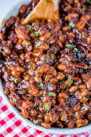

Baked Beans

Description
Bored of heinz baked beans?
If you have 15 minutes spare, why not try this delicious recipe
and test your culinary skills!
Ingredients:
- 2 teaspoons of rapeseed oil
- 1 small red onion, finely chopped
- 1 carrot, peeled and finely diced
- 1 stick of celery, finely diced
- 1 tablespoon of red wine vinegar
- 8 ounce can of chopped tomatoes
- 1.5 teaspoons of light brown sugar
- 1 teaspoon of paprika
- 1/2 teaspoon of worcestershire sauce
- 1/2 400g can of haricot beans, drained and rinsed
- 4 tablespoons of vegetable stock
- freshly ground black pepper, to taste
Instructions:
- Heat rapeseed oil in a non-stick saucepan.
- Add onion, carrot and celery; sauté over a medium heat for about 10 minutes or until softened.
- Carefully stir in vinegar; cook for 1 minute.
- Stir in tomatoes, sugar, paprika, Worcestershire sauce and black pepper.
- Bring to a simmer; cover and cook gently for 10 minutes, stirring occasionally.
-
Stir in beans; add stock if sauce is looking a little thick.
Bring back to a simmer; cover and cook gently for a further 8–10 minutes,
until sauce is cooked and beans are hot.
- Serve baked beans along with egg, toast, etc - whatever you like!